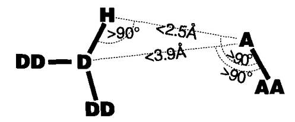

El estudio experimental y teórico de las interacciones entre proteínas ( protein-protein interactions ) sembró el interés por entender los mecanismos que explicaban la especificidad de su reconocimiento. Obviamente éste es un proceso termodinámico complejo, donde se conjugan afinidades y especificidades, pero en muchas ocasiones los protagonistas son los puentes de hidrógeno de la interfaz, que naturalmente dependen de la secuencia o estructura primaria, puesto que no todos los aminoácidos pueden actuar como donadores o aceptores (Kortemme et al., 2003).
|

|
En las secciones anteriores hemos probado algoritmos para muestrear, por un lado, rotámeros de cadenas laterales de aminoácidos y, por otro, bases nitrogenadas de nucleótidos, bajo la misma premisa de que la geometría del esqueleto peptídico y de la doble hélice de DNA va a variar muy poco al sustituir un número pequeño de cadenas laterales y bases nitrogenadas. En esta sección vamos un paso más allá, puesto que además de muestrear es necesario evaluar la especificidad del reconocimiento de las interfaces modeladas, por ejemplo estimando la formación de puentes de hidrógeno.
El punto de partida para presentar este algoritmo es la estructura del complejo de dnaA y su sitio operador, tras añadir con
Open Babel
los átomos de hidrógeno que puedan faltar de un fichero
en formato PDB (ver script ).
Por ejemplo, partiendo del complejo capturado en el archivo PDB 1J1V,
que ya usamos en el apartado 6.3, obtenemos 1j1v_withH.pdb.
Una vez realizado este paso preliminar,
por medio del siguiente código podemos identificar los puentes de la interfaz proteína-DNA, como haríamos con el programa
HBPLUS
(McDonald & Thornton, 1994):
#!/usr/bin/env python
""" prog4.2 Toma un complejo proteina-DNA en formato PDB y enumera los puentes de hidrogeno
encontrados entre donadores y aceptores de proteina y DNA, en la interfaz."""
__author__ = 'Bruno Contreras-Moreira'
from math import sqrt,acos,pi
# 0) datos del programa y parametros
complexfile = './files/1j1v_withH.pdb';
# 1) subrutinas
def lee_coordenadas_complejoPDB(filename):
""" Devuelve 2 listas de residuos de proteina y nucleotidos, cada uno con las
coordenadas de sus atomos, y una cadena de caracteres con la secuencia de DNA."""
coords,pcoords,ncoords = {},[],[]
# 1) guarda coordenadas en tabla o diccionario, permite que atomos esten desordenados,
# como en el caso de los archivos procesados con open babel
pdbfile = open(filename,'r')
try:
for line in pdbfile:
if(line[0:4] != 'ATOM'): continue
resID = line[17:26]
if(resID in coords): coords[resID] += line
else: coords[resID] = line
finally:
pdbfile.close()
# 2) convierte tabla a lista, ordenando residuos 'ALA 440'
resIDs = coords.keys()
resIDs.sort( lambda x,y: int(x[5:])-int(y[5:]) )
for resID in resIDs:
if(coords[resID][17:19] == " D"): ncoords.append(coords[resID])
else: pcoords.append(coords[resID])
return (pcoords,ncoords)
def puentesH_interfaz(protein,dna,verbose=False):
"""Identifica puentes de hidrogeno en una interfaz protein-DNA.
Devuelve un vector con la descripcion de los puentes definidos."""
# tabla de grupos donadores y aceptores de proteina y dna, tomada de
# http://floresta.eead.csic.es/3dfootprint/download/HB-PWM-atomic.txt
dna_donors = {'DT:N3':'1','DC:N4':'1','DA:N6':'1','DG:N2':'1'};
dna_aceptors = {'DT:O2':'1','DT:O4':'1','DC:O2':'1','DC:N3':'1','DA:N3':'1',
'DA:N7':'1','DG:N3':'1','DG:O6':'1','DG:N7':'1'};
prot_donors = {'ARG:NE':'1','ARG:NH1':'1','ARG:NH2':'1','LYS:NZ':'1',
'SER:OG':'1','THR:OG1':'1','ASN:ND2':'1','GLN:NE2':'1',
'HIS:ND1':'1','HIS:NE2':'1','TYR:OH':'1','CYS:SG':'1'};
prot_aceptors = {'ASN:OD1':'1','GLN:OE1':'1','GLU:OE1':'1','GLU:OE2':'1',
'ASP:OD1':'1','GLU:OD2':'1'};
# geometria de los puentes segun McDonald&Thornton(1994)J.Mol.Biol.238(5):777-793.
MAX_DA_DIST = 3.9
MAX_HA_DIST = 2.5
MIN_DHA_ANGLE = 90
puentesH = []
for amino in protein:
for patom in amino.split("\n"):
if(patom == ''): break
pdonor,paceptor = False,False
pgroup = patom[17:20] + ':' + patom[12:16]
pgroup = pgroup.replace(" ",'')
if(pgroup in prot_donors): pdonor = True
elif(pgroup in prot_aceptors): paceptor = True
else: continue
for base in dna:
for natom in base.split("\n"):
if(natom == ''): break
ndonor,naceptor = False,False
ngroup = natom[17:20] + ':' + natom[12:16]
ngroup = ngroup.replace(" ",'')
if(ngroup in dna_donors): ndonor = True
elif(ngroup in dna_aceptors): naceptor = True
else: continue
if(pdonor and ndonor): continue
DAdist = distancia(patom,natom);
# comprueba distancia DA
if(DAdist > MAX_DA_DIST): continue
if(verbose): print "distancia %s %s %g\n" % (pgroup,ngroup,DAdist)
# comprueba distancia HA
Hcandidatos = []
if(pdonor):
hidrogenos = busca_hidrogenos(patom,amino)
aceptor = natom
donor = patom
else:
hidrogenos = busca_hidrogenos(natom,base)
aceptor = patom
donor = natom
for H in hidrogenos:
HAdist = distancia(aceptor,H)
if(HAdist < MAX_HA_DIST):
if(verbose): print"distancia HA %g\n" % (HAdist)
Hcandidatos.append(H)
# comprueba angulo DHA y guarda los puentes resultantes
for H in Hcandidatos:
angDHA = calcula_angulo_puenteH(donor,H,aceptor)
if(angDHA > MIN_DHA_ANGLE):
if(verbose): print"angulo DHA %g\n" % (angDHA)
puente = "%s\n%1.1f DA %1.1f HA %1.1fD HA\n%s\n%s\n\n" % \
(patom,DAdist,HAdist,angDHA,natom,H)
puentesH.append(puente)
return puentesH
def busca_hidrogenos(atomo,residuo):
"""Mide la distancia entre los atomos de hidrogeno que pueda haber en un residuo,
ya sea un aminoacido o una base nitrogenada, y un atomo A pasado como argumento.
Devuelve una lista con las coordenadas de los hidrogenos enlazados con A"""
MAX_H_cov_dist = 1.6 # http://www.umass.edu/microbio/rasmol/rasbonds.htm
#http://www.science.uwaterloo.ca/~cchieh/cact/c120/bondel.html
Hcoords = []
for at in residuo.split("\n"):
if(at != atomo and at[13:14] == 'H'):
dist = distancia(at,atomo)
if(dist <= MAX_H_cov_dist):
Hcoords.append(at)
return Hcoords
def distancia (atomo1,atomo2):
"""Devuelve la distancia euclidea entre dos atomos en formato PDB"""
coords1 = extrae_coords_atomo(atomo1)
coords2 = extrae_coords_atomo(atomo2)
return sqrt( (coords1[0]-coords2[0])**2 + (coords1[1]-coords2[1])**2 + (coords1[2]-coords2[2])**2 )
def extrae_coords_atomo(atomo):
"""Lee las coordenadas cartesianas de un atomo en formato PDB y devuelve
una lista con las X, Y y Z de ese atomo."""
return [ float(atomo[30:38]), float(atomo[38:46]), float(atomo[46:54]) ]
def calcula_angulo_puenteH(D,H,A):
"""Devuelve el angulo formado entre el vectorHD y vector HA,
donde A=aceptor,H=hidrogeno y D=donador"""
HD,HA = [],[]
Dcoords = extrae_coords_atomo(D)
Hcoords = extrae_coords_atomo(H)
Acoords = extrae_coords_atomo(A)
# vector HD
HD.append(Dcoords[0]-Hcoords[0])
HD.append(Dcoords[1]-Hcoords[1])
HD.append(Dcoords[2]-Hcoords[2])
# vector HA
HA.append(Acoords[0]-Hcoords[0])
HA.append(Acoords[1]-Hcoords[1])
HA.append(Acoords[2]-Hcoords[2])
# angulo a partir del producto escalar
pescalar = HD[0]*HA[0] + HD[1]*HA[1] + HD[2]*HA[2]
modHD = sqrt(HD[0]**2+HD[1]**2+HD[2]**2)
modHA = sqrt(HA[0]**2+HA[1]**2+HA[2]**2)
cos_angulo = pescalar / (modHD * modHA)
return acos(cos_angulo) / (pi/180)
# 2) programa principal
print "# leyendo complejo %s ...\n" % (complexfile),
(protein,dna) = lee_coordenadas_complejoPDB( complexfile )
print "# total aminoacidos: %d total nucleotidos: %d \n" % (len(protein),len(dna)),
puentesH = puentesH_interfaz(protein,dna,True)
print "# puentes identificados: %d\n" % (len(puentesH)),
for HB in puentesH:
print HB